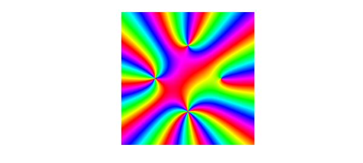
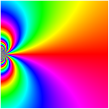

function Singularities
LW = 'linewidth'; FS = 'fontsize'; MS = 'markersize';
An isolated singularity $z_0$ of a function $f$ in the complex plane is classified as removable, pole of order $n$, or essential depending on the coefficients ${c_k}$ of the function's Laurent series expansion at $z_0$, $$ f(z) = \sum_{k=-\infty}^\infty c_k (z - z_0)^k. $$ In particular, we say that $z_0$ is (following [1])
-
a removable singularity if $c_k = 0$ for all $k < 0$,
-
a pole of order $n$ if $c_{-n} \neq 0$ and $c_k = 0$ for all $k < -n < 0$,
-
an essential singularity if $c_k \neq 0$ for infinitely many negative $k$.
A removable singularity
Consider the function $f(z) = \mathrm{sinc}(z) = \frac{\sin(z)}{z}$. Strictly speaking, $f$ is not defined at $z = 0$. However, expanding $f$ as a Laurent series reveals that there are no nonzero coefficients for negative powers of $z$: $$ f(z) = \frac1z \sum_{k=0}^\infty \frac{(-1)^k z^{2k+1}}{(2k+1)!} = \sum_{k=0}^\infty \frac{(-1)^k z^{2k}}{(2k+1)!} = 1 - \frac{z^2}{3!} + \frac{z^4}{4!} - \frac{z^5}{6!} + \cdots. $$ The singularity at $z = 0$ can be removed simply by defining $f(0) = c_0 = 1$.
f = @(z) sin(z+1e-14)./(z+1e-14); % sinc in MATLAB is defined as sin(pi z)/(pi z) removable = chebfun2(f, 1.5*pi*[-1 1 -1 1]); plot(removable)

Indeed, the phase portrait of $f$ looks clean around the origin, and there is no singularity after all. The points $\pm\pi$ stand out in the plot, but these are zeros, not singularities, of $f$. In a phase portrait the difference is that the colors of zeros and poles wind in opposite directions.
Poles
Contrary to removable singularities, we can read off singularities of the form $z^{-n}$ from a phase portrait. In order for Chebfun2 to handle the poles, we will "smash" the function a la Nick Trefethen's earlier example "Phase portraits for functions with poles" -- that is, we will plot a smooth function with the same phase as the one we're interested in.
function g = smash(f)
g = f./(1 + abs(f).^2); % smooth function with same phase as f
g(isnan(g)) = 0; % give 0 rather than NaN at poles
end
Now we create a function $g$ with poles of different orders at the points ${\pm 1, \pm \mathrm{i}}$.
g = @(z) (z-1).^-1 .* (z-1i).^-2 .* (z+1).^-3 .* (z+1i).^-4; poles = chebfun2(@(z) smash(g(z)), 2*[-1 1 -1 1]); plot(poles)

The order of each pole is equal to the number of times each color appears on a small loop winding once around the pole. At $z = 1$, each color appears once, indicating that $z = 1$ is a simple pole of $f$. On the other hand, at $z = -1$, each color appears three times, indicating that $z = -1$ is a pole of order 3. In this example, each $e^{i \pi k/2}$ is a pole of order $k+1$ for $k = 0,1,2,3$.
An essential singularity
The function $h(z) = \mathrm{e}^{-1/z}$ has an essential singularity at the origin. As mentioned above, this means that its Laurent expansion at $z=0$ has infinitely many negative terms. In particular, $$ h(z) = \sum_{k=-\infty}^0 \frac{(-z)^k}{(-k)!}. $$ This complicated singularity cannot be captured in full by Chebfun2, but we can peek at it from the side by first slightly squashing the complex plane with the transformation $z \mapsto z^{0.9}$.
h1 = @(z) exp(-1./(z.^.9)); essential = chebfun2(h1, .5*[0 1 -.5 .5]); plot(essential)

The essential singularity can be thought of as a pole of order infinity. Winding around at an infinitesimal distance from the origin, each color appears infinitely many times, a fact that is implied by the following famous theorem.
$\mathrm{\bf Big~Picard~Theorem~(1879).}$ Suppose $z_0 \in U \subset {\bf C}$ and $f : U \backslash {z_0} \to {\bf C}$ is an analytic function with an essential singularity at $z_0$. Then $f$ takes on every complex value, with at most one exception, in any neighborhood of $z_0$.
References:
[1] Wegert, Elias. Visual Complex Functions: An Introduction with Phase Portraits, vol. 1. Birkhauser/Springer, 2012.
[2] M. J. Ablowitz and A. S. Fokas. Complex Variables: Introduction and Applications. Cambridge University Press, 1997.
end